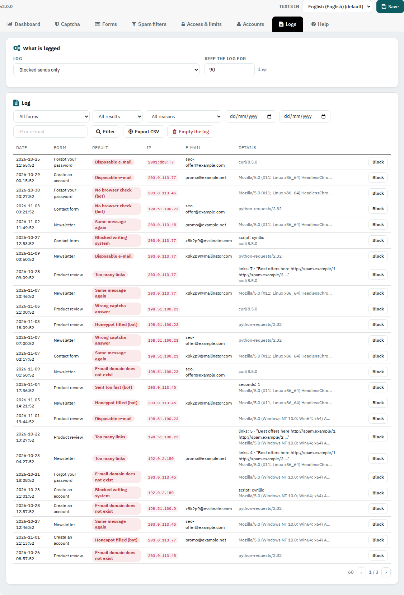

See every refused send with its reason, filter it, export it and block an address in one click.

Blocked sends only (default), every send, or nothing (the Dashboard counts are always kept). Keep the log for the days set.
Filter by form, result, reason, dates, IP or e-mail. Details show the reason (score, word, writing system, number of links...) and the browser of the sender. Block adds the IP to the refused list. Export CSV downloads the filtered rows; Empty the log removes all rows of this shop.